Didier Fleury
Réparation, maintenance et vente de copieurs professionnels.
Intervention rapide en Loire, Haute-Loire et Rhône, service de proximité, expertise toutes marques.
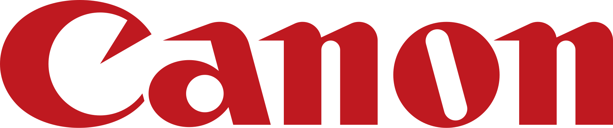
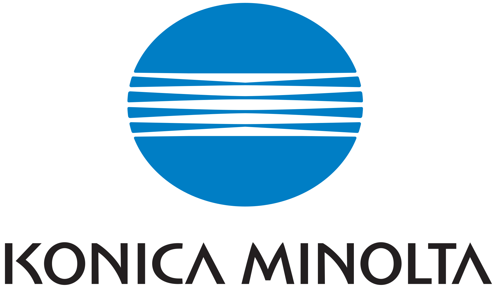
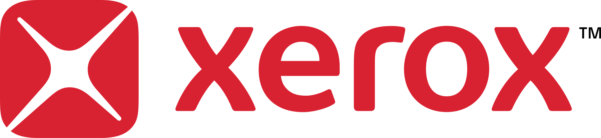
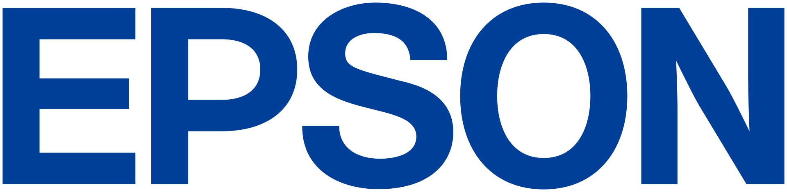
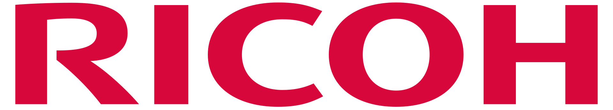
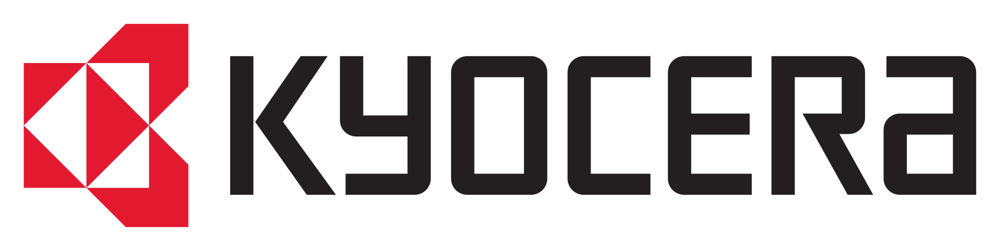
Services & Prestations
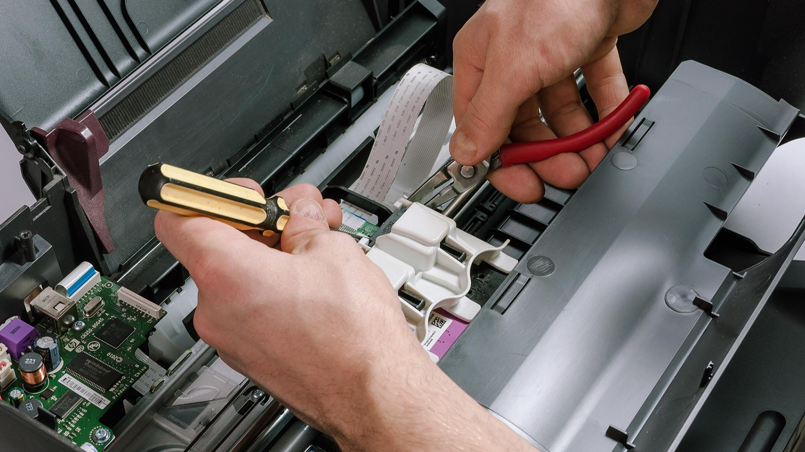
Dépannage & Réparation
Une panne sur votre équipement paralyse votre activité ? J'interviens rapidement dans la Loire, la Haute-Loire et le Rhône pour diagnostiquer et réparer vos photocopieurs et imprimantes professionnelles toutes marques. Bénéficiez d'un service de proximité réactif, sans intermédiaire, pour remettre vos systèmes d'impression en route dans les meilleurs délais.
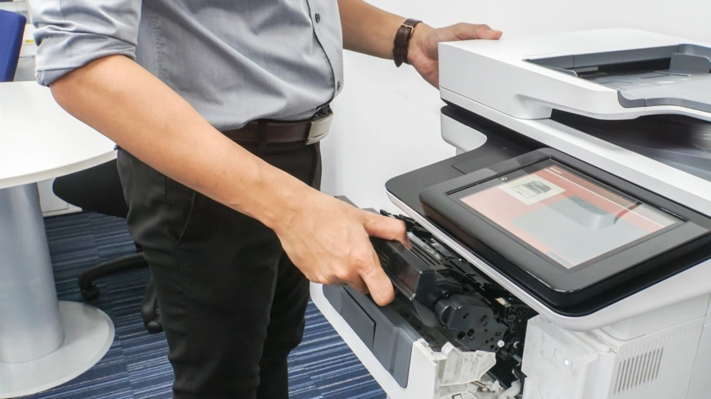
Contrats de maintenance
Anticipez les pannes et prolongez la durée de vie de vos équipements grâce à un entretien régulier. Mes contrats de maintenance sur mesure incluent la révision périodique, le remplacement des pièces d'usure et un suivi technique personnalisé. Une tranquillité d'esprit garantie pour conserver une qualité d'impression irréprochable au quotidien.
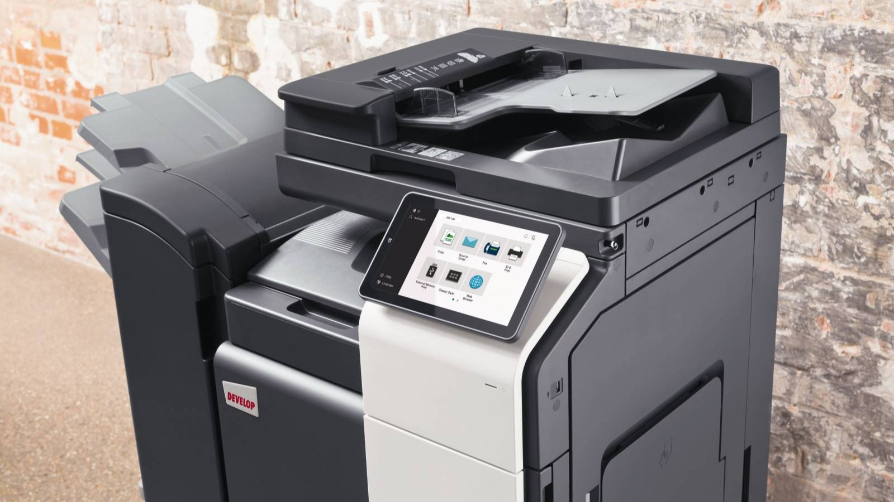
Vente et Location de matériel
Besoin de renouveler ou d'équiper votre entreprise ? Technicien indépendant depuis 2000, je vous conseille en toute objectivité sur le choix de vos photocopieurs et imprimantes multifonctions (Canon, Konica Minolta, Xerox, Epson, Ricoh, Kyocera). Profitez de solutions adaptées à vos volumes d'impression, disponibles à l'achat ou en location.
25 ans d'expertise au service de vos équipements d'impression
L'expertise d'un technicien indépendant à votre service depuis 2000
Depuis plus de 25 ans, j'accompagne les entreprises, artisans, collectivités et professions libérales de la région dans la gestion, le dépannage et l'optimisation de leur parc d'impression.
J'ai bâti mon activité sur une conviction simple : la proximité, la réactivité et l'impartialité sont les clés d'un service bureautique de confiance.
Pourquoi faire appel à un expert indépendant ?
Dans un secteur souvent dominé par de grandes structures impersonnelles et des contrats rigides, faire le choix d'un technicien indépendant présente des avantages majeurs pour votre structure.
Un conseil 100 % neutre et objectif
N'étant lié par aucun contrat exclusif avec un constructeur, je ne cherche pas à vous vendre la machine la plus chère ou la plus récente. Je vous conseille en toute indépendance parmi les plus grands constructeurs (Canon, Konica Minolta, Xerox, Epson, Ricoh, Kyocera) afin de sélectionner l'équipement qui correspond précisément à vos volumes d'impression et à votre budget.
Un interlocuteur unique et dédié
Fini les standards téléphoniques interminables et les intervenants différents à chaque panne. Vous échangez directement avec moi, de la première prise de contact jusqu'à l'intervention sur site. Connaissant parfaitement l'historique de votre matériel et vos contraintes métier, je peux établir un diagnostic rapide et adapté.
Réactivité et ancrage local
Basé au cœur de la région, j'interviens rapidement sur l'ensemble de la Loire (42), de la Haute-Loire (43) et du Rhône (69). Je sais qu'une panne d'imprimante ou de photocopieur peut paralyser toute votre activité administrative : c'est pourquoi je fais du dépannage d'urgence une priorité.
Une approche durable et économique
Avant d'envisager le remplacement d'une machine, je privilégie toujours la réparation et l'entretien préventif. Prolonger la durée de vie de vos équipements permet non seulement de réduire vos coûts d'exploitation, mais aussi de vous inscrire dans une démarche écoresponsable en évitant le gaspillage de matériel encore fonctionnel.
Ils me font confiance
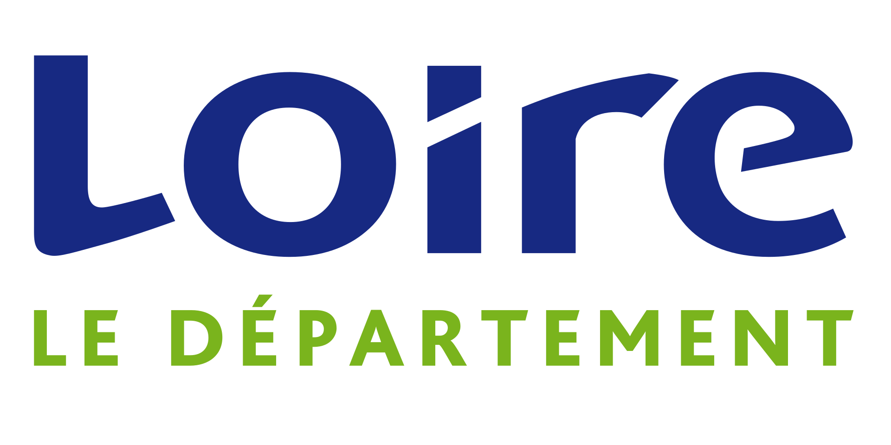
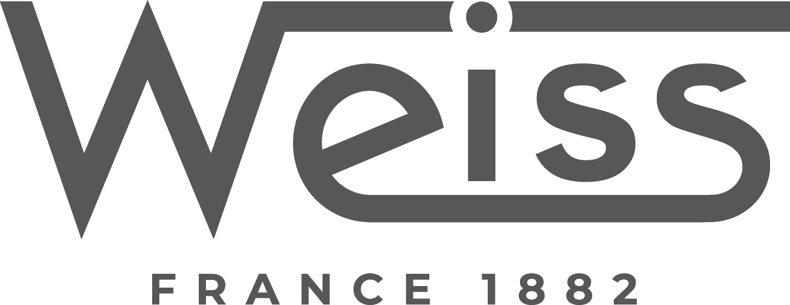
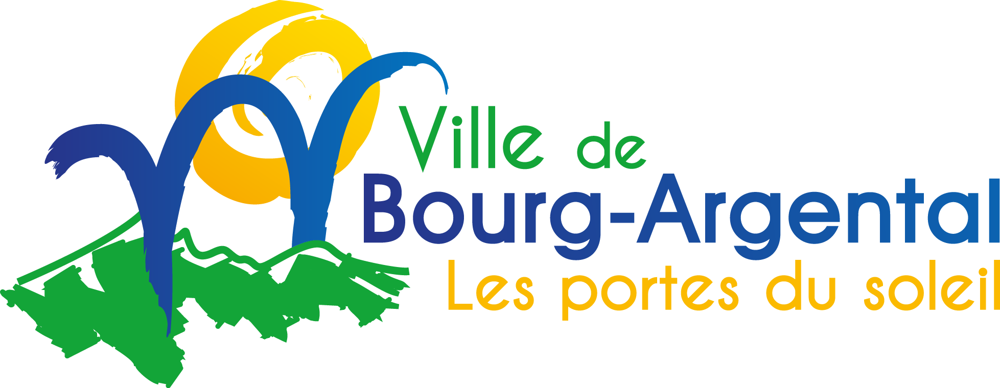
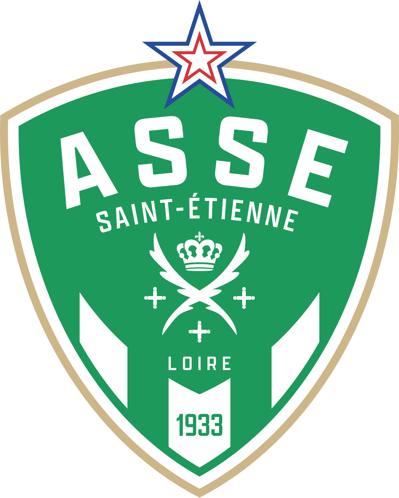
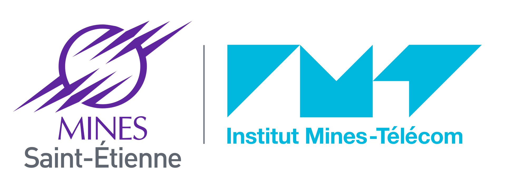
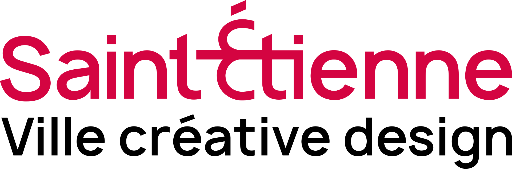
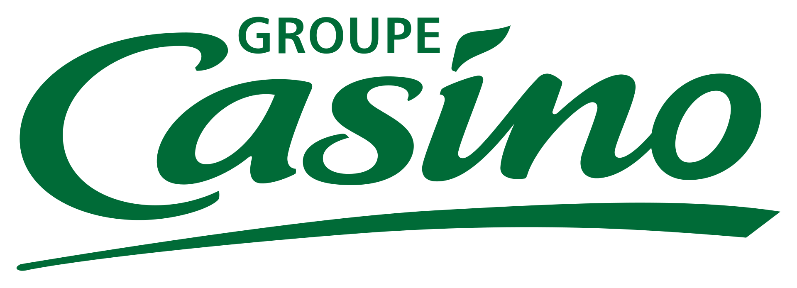
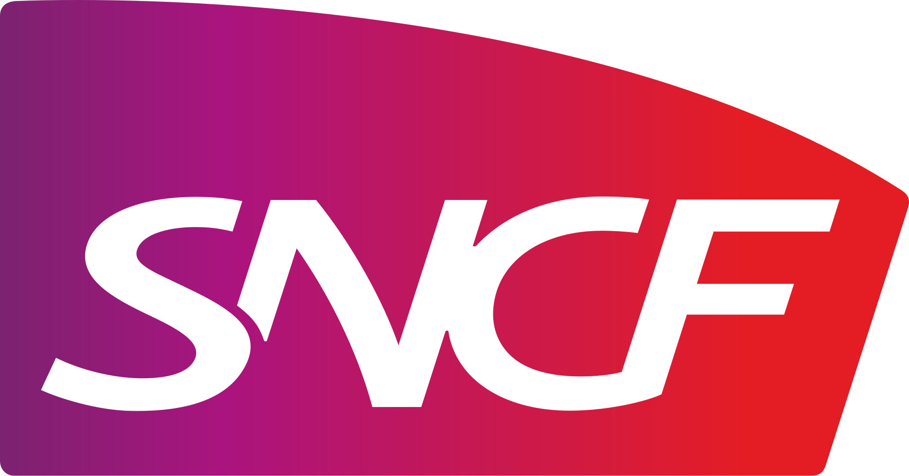
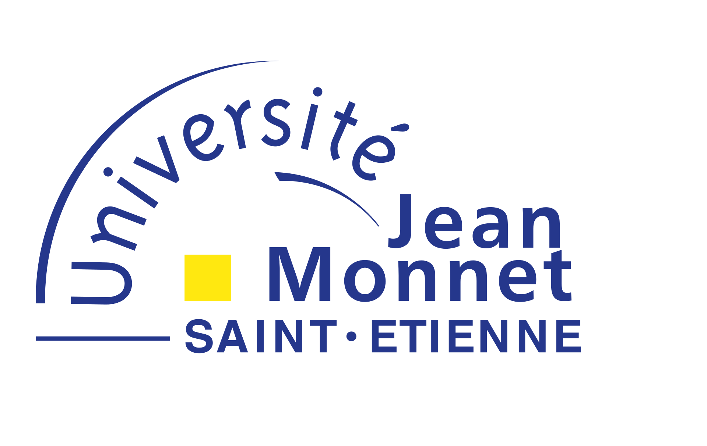
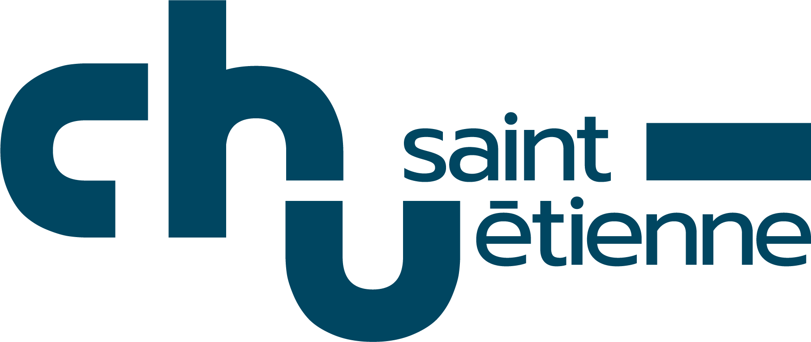
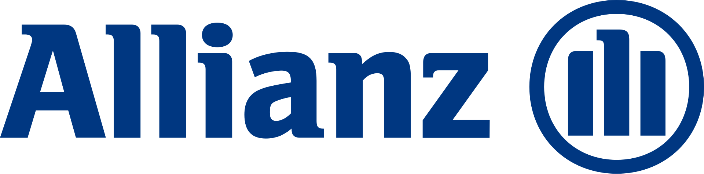
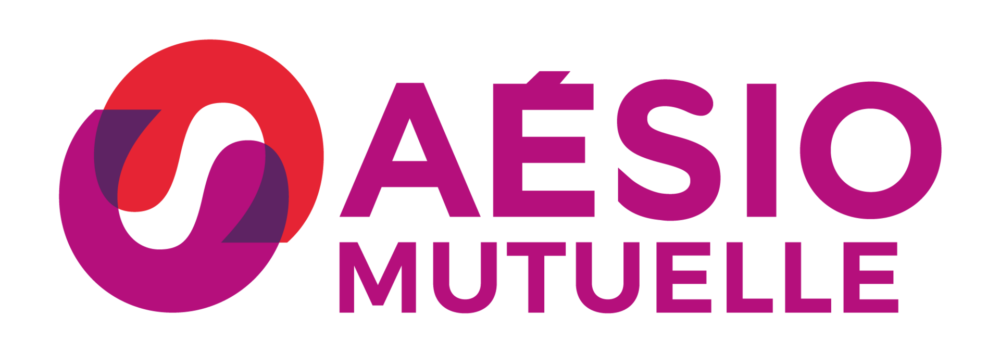
Contact
Une panne, un projet d'équipement ou un besoin de maintenance ?
Une imprimante ou un photocopieur à l'arrêt peut vite paralyser votre entreprise. Que ce soit pour un dépannage express, l'entretien de vos machines ou le renouvellement de votre matériel, vous échangez directement avec un technicien expérimenté, sans intermédiaire ni centre d'appel.
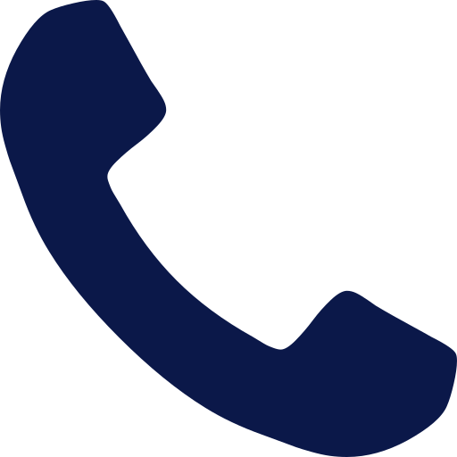
Une urgence absolue ? Appelez-moi directement au +33 6 01 02 03 04 pour un diagnostic ou une intervention rapide.
-
Conseil neutre & devis gratuit : Étude personnalisée de vos besoins sur toutes marques (Canon, Konica Minolta, Xerox, Ricoh, Epson, Kyocera).
-
Zone d'intervention : Déplacements sur site dans la Loire (42), la Haute-Loire (43) et le Rhône (69).
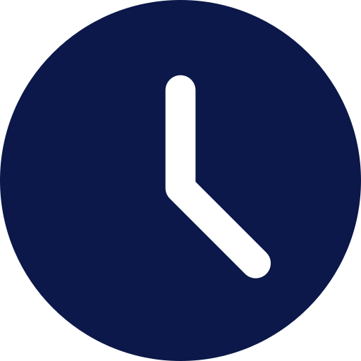
Horaires & Réactivité : Disponible du lundi au vendredi, de 8h à 18h. Réponse sous 24h ouvrées par formulaire.